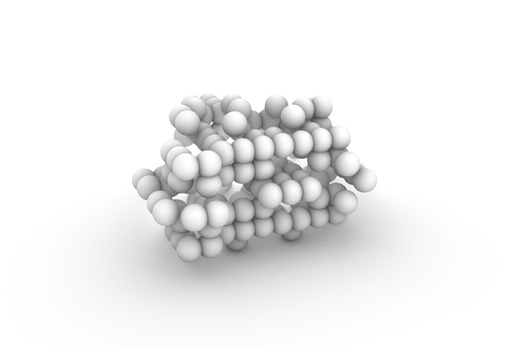

Game of life in Rhino 3D
Hello.
Prompted by this year’s Advent Of Code challenge I have implemented a 3D version of the game of life in Python in Rhino 7.
Here are some images renders from individual steps in my solution, followed by the code I used to generate them.



import rhinoscriptsyntax as rs import Rhino from itertools import permutations from collections import defaultdict def conway_cubes(rounds): rs.EnableRedraw(False) # Example from the puzzle state = """.#. ..# ###""" new_cubes = set() # Build the starting grid for y, row in enumerate(state.splitlines()): for x, cell in enumerate(row): if cell == '#': new_cubes.add((x,y,0)) # Initialise sets and lists old_spheres = [] # 27 neighbours neighbouring = set(permutations( [1,1,1,0,0,0,-1,-1,-1],3) ) # a cube is not its own neighbour neighbouring.remove((0,0,0)) for round in range(rounds+1): cubes = new_cubes.copy() rs.DeleteObjects(old_spheres) neighbours = defaultdict(int) old_spheres=[] # Draw cubes and identify neighbours for cube in cubes: old_spheres.append( rs.AddSphere(cube, 0.6) ) for n in neighbouring: neighbours[(cube[0] + n[0], cube[1] + n[1], cube[2] + n[2], )] += 1 new_cubes = set() rs.Redraw() # Create cubes for next round for location, n in neighbours.iteritems(): if location in cubes: if 2 <= n <= 3: new_cubes.add(location) elif n == 3: new_cubes.add(location) rs.EnableRedraw() if __name__ == '__main__': conway_cubes(rounds = 6)